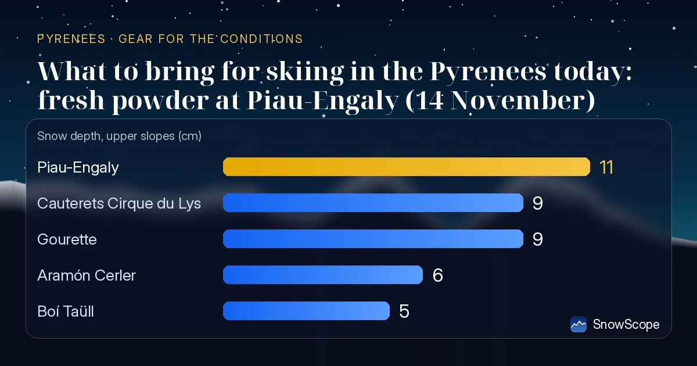

What to bring for skiing in the Pyrenees today: fresh powder at Piau-Engaly (14 November)
Saturday in the Pyrenees mixes fresh snow with exposed rock and changing freezing levels that swing from above the summits to well below the base. The question for skiers is not which resort is best—it is which layers, edges and skis will work for all three conditions on the same day.
See the live snow forecast for Piau-Engaly in the SnowScope appSnow depth, powder alerts and the 3D map, free.
Three resorts with new powder, two with almost nothing
Piau-Engaly, Cauterets Cirque du Lys and Gourette each caught 20 cm or more of snow in the last three days. Piau-Engaly led with 24 cm, Cauterets with 24 cm and Gourette with 20 cm. That is enough to ski off-piste, but only where the base is thick. The upper slopes at Piau-Engaly hold about 11 cm, Cauterets about 9 cm and Gourette about 9 cm.
Aramón Cerler and Boí Taüll saw less snow arrive: 13 cm and 11 cm in three days. Their upper slopes now carry just 6 cm and 5 cm. That is not powder—that is a thin veneer over whatever lies beneath.
| Resort | Snow depth | New snow, 72 h | Coming, next days | Top |
|---|---|---|---|---|
| Piau-Engaly | 11 cm | 24 cm | 8 cm | 2,527 m |
| Cauterets Cirque du Lys | 9 cm | 24 cm | 12 cm | 2,420 m |
| Gourette | 9 cm | 20 cm | 11 cm | 2,453 m |
| Aramón Cerler | 6 cm | 13 cm | 3 cm | 2,618 m |
| Boí Taüll | 5 cm | 11 cm | 1 cm | 2,747 m |

Where the rocks hide and the crust forms
Early-season snow at all five resorts sits under 30 cm on the upper slopes. When the cover is that thin, every rock, every boulder and every hard summer surface changes where you can ski safely. Groomed pistes are your friend: the resort cats have cleared the worst. Off-piste and ungroomed terrain are for another day, when the base is thicker.
Rain and crust risk hang over Piau-Engaly, Aramón Cerler and Boí Taüll. The freezing level today stays near or above the summit at all three. If rain falls instead of snow, or if the sun touches south-facing slopes, the surface will freeze to a hard crust by evening. On a crust, skis chatter, edges catch and falls hurt.

Temperature swings: pack layers you can shed
The 0 °C level—the height where air turns from warm to cold—is all over the place today. At Piau-Engaly it swings from 2,210 m in the early morning to 4,290 m by afternoon. At Cauterets the range is 2,330 m to 4,240 m. Even at Gourette, which sits lower, the swing is from 2,440 m to 3,640 m. Boí Taüll, the highest, sees 2,270 m to 3,950 m.
What this means: wear a base layer and a mid-layer you can remove. Start cold at the first lift, strip layers by mid-morning. By afternoon, the high summits are warm. On Sunday and Monday that swing gets worse before the system dies away. Bring a waterproof shell against rain on the lower slopes and sudden crust when the sun hits. Neck warmer for the wind at the top, goggles for the flat light of fresh snow.
Which edges, which skis
Sharp edges are non-negotiable when snow is thin. Book a local service, or rent: mountain shops tune edges for the day's conditions. Blunt edges on a crust will not hold, and blunt edges on ice—which hides under thin snow—are dangerous.
Take wider skis or a board if you plan to ski the powder at Piau-Engaly, Cauterets or Gourette. But stick to the piste first to read the snow. Once you know where the rocks are, then venture off. If you are not sure, rent instead of bringing your own: local rental shops have equipment set up for early-season conditions and can swap you to something else if the snow changes.
When to go out and what will happen next
First light is best. The snow is firmest, the crust has not yet softened, and you will find what powder there is before it gets tracked. By mid-morning the surface turns to porridge where it has warmed. By afternoon, crust.
Sunday brings more snow to Cauterets (12 cm forecast) and Gourette (11 cm forecast), but only 8 cm to Piau-Engaly and 3 cm to Aramón Cerler. Boí Taüll will see barely 1 cm. By Monday the snow ends and the warmth returns. If you can ski Sunday morning after the new snow, do it. Monday will be thin again.
Off-piste: know what you are walking into
Before you leave the piste, read the official avalanche bulletin. Carry an avalanche transceiver, a shovel and a probe, know how to use all three, and never ski alone off-piste. A thin snowpack can hide weak layers and can slide without warning.
On a day like this, with 5 to 11 cm of new snow on a base that is barely thicker, the avalanche risk is low but not zero. The real danger is hitting a rock, a stump or summer grass under the cover. That is not an avalanche problem; it is a collision problem. It still ends your day in a helicopter.
Tips for skiers
- Get to the first lift early and stay on groomed pistes until you have felt the snow and seen where the rocks break the surface.
- Pack a layer you can remove by mid-morning: the air warms fast as altitude drops, and the freezing level is moving up all day.
- Sharpen your edges or rent locally: shops have tuned skis for thin, hard early-season snow.
- Check the official avalanche bulletin before any off-piste plan, and go with others, not alone.
- Sunday will bring more snow to the French resorts—if the forecast does not change, ski Sunday morning before the crust hardens on Monday.
About these numbers
Resort snow depths are the deepest snow on the resort's upper slopes on the date shown; they are estimates for an area, not a measurement at one point. Forecasts can change. Always read the official avalanche bulletin before going off-piste.
Official avalanche bulletins: Météo-France / Meteocat / AEMET
Cite this report
For research, teaching or the press: the numbers and charts are free to reuse under CC BY 4.0 with this citation.
SnowScope (2026), What to bring for skiing in the Pyrenees today: fresh powder at Piau-Engaly (14 November), https://snowscope.app/blog/en/2026/11/pyrenees-what-to-bring-ski-gear-conditions-14-november-2026.html, accessed 2026-11-14
SnowScope (Atlas Labs). (2026, November 14). What to bring for skiing in the Pyrenees today: fresh powder at Piau-Engaly (14 November). SnowScope snow reports. https://snowscope.app/blog/en/2026/11/pyrenees-what-to-bring-ski-gear-conditions-14-november-2026.html
BibTeX
@misc{snowscope2026pyreneeswhattobringskige,
author = {{SnowScope (Atlas Labs)}},
title = {What to bring for skiing in the Pyrenees today: fresh powder at Piau-Engaly (14 November)},
year = {2026},
month = nov,
howpublished = {\url{https://snowscope.app/blog/en/2026/11/pyrenees-what-to-bring-ski-gear-conditions-14-november-2026.html}},
note = {Published 2026-11-14 12:19 UTC; accessed 2026-11-14}
}· CC BY 4.0 · Methods, data and tools →
Piau-Engaly: snow and temperature by height, this winter vs last (tools) →
Follow Piau-Engaly
Free: a message when fresh snow is coming, and the forecast every morning.
More snow reports

Cauterets offers 25 km of runs for 46 EUR, but our snow history shows that the best chance for cover is the last week of December.

Boí Taüll starts at 2039 m and beats Baqueira Beret on day-pass price, though early December snow still takes some patience.

Three thin winters in a row ended in 2025-26; this autumn has started normally.